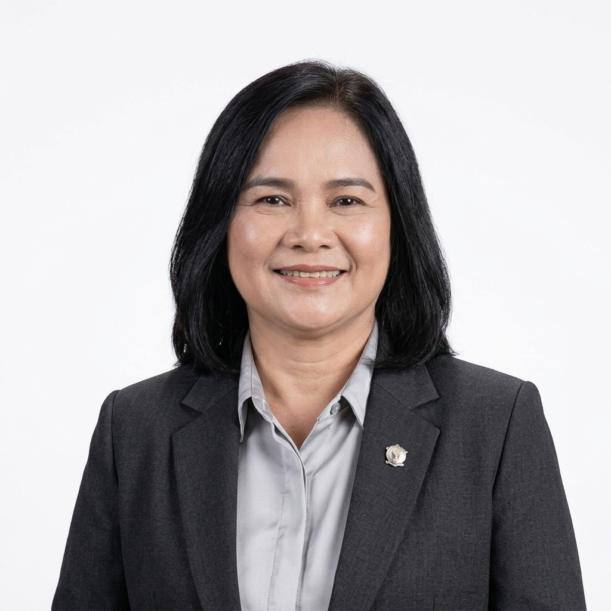

.png)
Nurturing Visionary Leaders Since
VISION
To be a transformative School of Business and Management that produces ethical and globally competent leaders who uphold honor and excellence, responsibly steward wealth, and advance sustainable development through innovative business, hospitality, and tourism service.
Mission
- S - Shape competent, ethical, and values-driven graduates through quality instruction, research, and lifelong learning.
- B - Build a culture of honor, excellence, integrity, innovation, and responsible stewardship of wealth through industry-responsive and outcomes-based education.
- M - Mobilize partnerships, community engagement, and excellence in accountancy, business, hospitality and tourism to promote sustainable development and meaningful service to society.
Graduate Attributes
Program Educational Objectives (PEO's)
- Demonstrate broad and coherent knowledge of business, accountancy, hospitality, and tourism concepts, theories, principles, and practices necessary for professional and lifelong learning.
- Apply specialized business and management knowledge, analytical thinking, innovative approaches, and appropriate technologies in addressing complex professional and organizational challenges.
- Perform independently and collaboratively as responsible professionals who effectively manage tasks, projects, and decision-making processes with accountability, adaptability, and leadership.
- Communicate effectively with stakeholders and practice ethical, socially responsible, and sustainable approaches that uphold honor.
Department Staff
John Jay S. Barbadia, DM
Department Dean

Cherry M. Lopez
Department Secretary

Jan Mark P. Cahillg, CPA, MBA
Program Head - BS Accountancy

Ma. Regina Fe S. Lopez, MBA
Program Head - BSBA
Atty. Melvin P. Baylon
Faculty Member

Mariel Ann L. Guiljon, CPA
Faculty Member
Angemar T. Malala
Faculty Member
Allan V. Arellano
Faculty Member
Jan Eduard J. Irog
Faculty Member
Nixsun D. Casuncad
Faculty Member

Rene T. Talaquines, PhD
Faculty Member

Joey B. Orcena
Faculty Member
Adrian O. Rival, CPA
Faculty Member
Accreditation Certificate
Institutional Academic Accreditation
Granted by the Federation of Accrediting Agencies of the Philippines (FAAP) via the PACUCOA evaluation, under CHED CMO No. 1, s. 2005
Frequently Asked Questions
Quick answers about our programs, admission, student life, and accreditation.
Programs What undergraduate programs can I enroll in under the School of Business and Accountancy?
We offer undergraduate degree programs including Bachelor of Science in Accountancy (BSA), Bachelor of Science in Business Administration (BSBA) with majors in Marketing Management and Financial Management.
Programs What can I do after graduating from BS Accountancy?
BS Accountancy prepares future CPAs for audit, tax advisory, financial reporting, and government regulatory oversight. Graduates can pursue corporate and private accounting, government, tax and advisory, public practice, or academia.
Programs What is the difference between the BSBA majors in Financial Management and Marketing Management?
Financial Management prepares you for corporate finance, banking, asset investments, and risk management, with careers in treasury, wealth management, and investment, commercial and retail banking. Marketing Management focuses on sales, brand positioning, digital campaigns, and market research, with careers in brand and product management, digital marketing, and commercial accounts.
Admission How do I apply for admission to the School of Business and Accountancy?
Visit the Admission page for the step-by-step process and the online enrollment form. You can also send us an inquiry first if you would like help choosing a program.
Admission Where can I find the tuition fees and scholarships?
The Admission page lists the tuition breakdown in its tuition tabs and has a Student Assistance & Scholarships section showing the assistance available to students.
Admission Where is the SBA office and when can I visit?
We are at Rizal Street, Kabankalan City, Negros Occidental, 6111, open from 8am to 5pm. You can also reach us at (034) 793 3543 or SBA@southlandcollege.edu.ph.
Student Life Which student organizations can I join?
Accountancy students can join the Junior Philippine Institute of Accountants (JPIA), while business students can join the Junior Business Executives (JBEX). Visit the Organizations page to learn what each one does.
Student Life Where can I find the latest news, events, and announcements?
The Gallery page gathers our latest news, events, and media, including posts from the SBA, JPIA, and JBEX Facebook pages.
Student Life Will I get exposure to real business practice while studying?
Yes. SBA works with industry partners, and student organizations such as JBEX run real-world business projects, corporate expos, and seminars that connect classroom learning to actual business practice.
Accreditation & Support Is the School of Business and Accountancy accredited?
Our institutional academic accreditation is granted by the Federation of Accrediting Agencies of the Philippines (FAAP) via the PACUCOA evaluation, under CHED CMO No. 1, s. 2005. You can view the certificate in the Accreditation Certificate section on this page.
Accreditation & Support Who can I talk to about my program or subjects?
You can approach our Department Dean, Department Secretary, or the Program Heads of BS Accountancy and BSBA. They are listed in the Department Staff section of this page.
Accreditation & Support How can I send an inquiry?
Use the Contact Inquiry Form on the Admission page, call (034) 793 3543, or email SBA@southlandcollege.edu.ph. Our office hours are 8am to 5pm.
Still have a question? Send us an inquiry